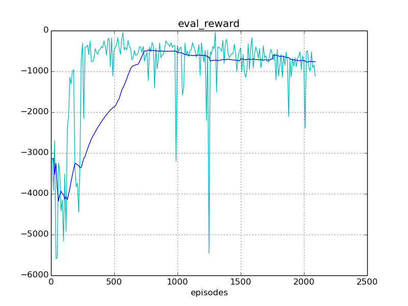
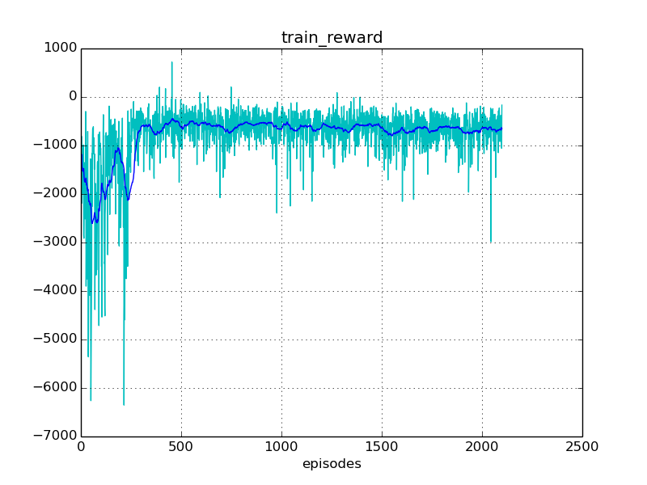
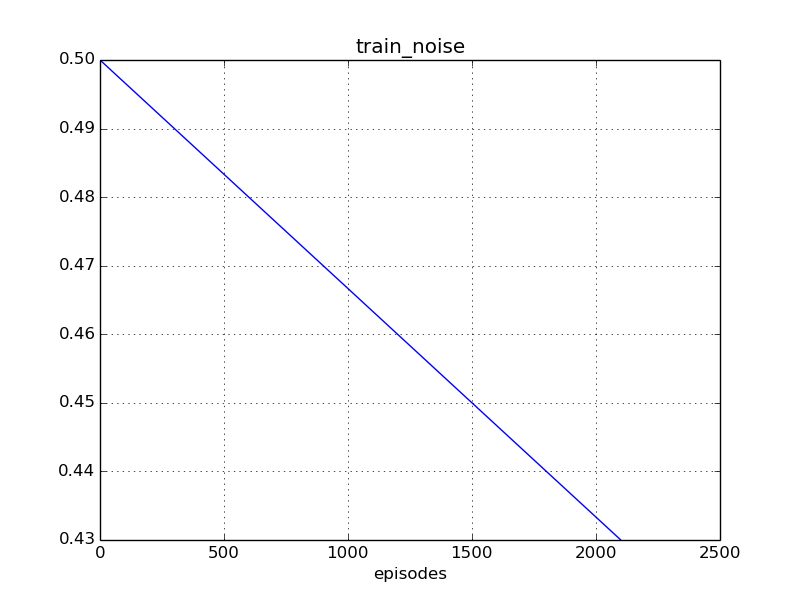
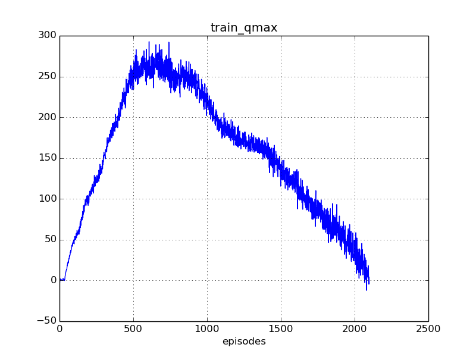

Experiment #007
Reward: -785
Qmax: 12
Left: 11:55:10 (14%)
Report time: 2017-01-31 19:38:30
Host name: bernard
Configuration
Experiment:
exp.base_path: experiments/
exp.episodes: 15000
exp.id: 007
exp.logger_class: core.logger.Logger
exp.mind_class: tf.mind.TensorflowMind
exp.platform_class: tf.platform.TensorflowPlatform
exp.save_every_episodes: 200
exp.steps: 75
exp.world_class: zoo.scorpion.world.ScorpionWorld
Algorithm:
alg.batch_size: 128
alg.buffer_size: 100000
alg.noise_rate_method: linear_05_00
alg.noise_sigma: 0.1
alg.noise_theta: 0.01
Mind:
mind.evaluate_every_episodes: 10
Environment:
env.assets: ./assets/
env.episode_jpos_method: jpos_init_ball
env.frame_skip: 2
env.id: Zoo:Mujoco:Scorpion-v1
env.init_every_episods: 30
env.reward_method: target_ball_reward
env.step_jpos_method: jpos_do_nothing
env.target_range_xz: [[-0.7, 0.7], [0.5, 1.0]]
env.world.agents: ['scorpion', 'ball']
env.world.scorpion.agents: ['tentacle', 'target']
env.world.scorpion.algorithm:
env.world.scorpion.class: zoo.scorpion.scorpion.ScorpionAgent
env.world.scorpion.inputs: ['ball_x', 'ball_y', 'ball_z', 'ball_vx', 'ball_vy', 'ball_vz']
env.world.scorpion.tentacle.algorithm:
env.world.scorpion.tentacle.inputs: ['target_x', 'target_z']
env.world.scorpion.tentacle.mind_path: experiments/003/mind/world.scorpion.tentacle
Reporting:
report.diagram_mean_frame: 50
report.refresh_html_every_secs: 90
report.summary_every_episodes: 30
report.write_every_episodes: 10
Progress
Episodes: 2100
Steps: 157500
Total time: 13:51:35
spent: 01:56:25 (14%)
left: 11:55:10
Finish: 07:33:40 2017-02-01
Performance: 0.30 per sec
Results
Train reward: -640.17
Eval reward: -785.21
Diagrams




Instances
Experiment:
id: 007
work_path: experiments/007
platform: TensorflowPlatform
world: ScorpionWorld:
env_id: Zoo:Mujoco:Scorpion-v1
model_path: ./assets/world.xml
total_act_dim: 6
env: ScorpionEnv:
model_path: /home/roman-ml/prj/rmus/zoo/zoo/scorpion/experiments/007/environment/env_model.xml
sensors:
world.scorpion.sensor_head_pos [1]
world.scorpion.sensor_head_vel [1]
world.scorpion.tentacle.sensor_s1_pos [1]
world.scorpion.tentacle.sensor_s1_vel [1]
world.scorpion.tentacle.sensor_s2_pos [1]
world.scorpion.tentacle.sensor_s2_vel [1]
world.scorpion.tentacle.sensor_s3_pos [1]
world.scorpion.tentacle.sensor_s3_vel [1]
world.scorpion.target.sensor_x [1]
world.scorpion.target.sensor_z [1]
world.ball.sensor_x [1]
world.ball.sensor_y [1]
world.ball.sensor_z [1]
world.ball.sensor_vx [1]
world.ball.sensor_vy [1]
world.ball.sensor_vz [1]
world.ball.sensor_accelerometer [3]
actuators:
world.scorpion.actuator_head [-10 +10]
world.scorpion.actuator_target_x [-2 +2]
world.scorpion.actuator_target_z [-1 +2]
world.scorpion.tentacle.actuator_s1 [-2000 +2000]
world.scorpion.tentacle.actuator_s2 [-1500 +1500]
world.scorpion.tentacle.actuator_s3 [-500 +500]
sensors:
no
actuators:
no
observations:
sensor: world.scorpion.sensor_head_pos=[-0.678]
sensor: world.scorpion.sensor_head_vel=[-0.469]
inputs: world.scorpion.inputs_ball_x=[+0.099]
inputs: world.scorpion.inputs_ball_y=[+0.391]
inputs: world.scorpion.inputs_ball_z=[-4.1]
inputs: world.scorpion.inputs_ball_vx=[+0.292]
inputs: world.scorpion.inputs_ball_vy=[+2.17]
inputs: world.scorpion.inputs_ball_vz=[-6.41]
sensor: world.scorpion.tentacle.sensor_s1_pos=[+0.551]
sensor: world.scorpion.tentacle.sensor_s1_vel=[+1.1]
sensor: world.scorpion.tentacle.sensor_s2_pos=[-2.13]
sensor: world.scorpion.tentacle.sensor_s2_vel=[+0.065]
sensor: world.scorpion.tentacle.sensor_s3_pos=[+2.81]
sensor: world.scorpion.tentacle.sensor_s3_vel=[+0.127]
inputs: world.scorpion.tentacle.inputs_target_x=[+0.44]
inputs: world.scorpion.tentacle.inputs_target_z=[-0.721]
sensor: world.scorpion.target.sensor_x=[+0.44]
sensor: world.scorpion.target.sensor_z=[-0.721]
sensor: world.ball.sensor_x=[+0.099]
sensor: world.ball.sensor_y=[+0.391]
sensor: world.ball.sensor_z=[-4.1]
sensor: world.ball.sensor_vx=[+0.292]
sensor: world.ball.sensor_vy=[+2.17]
sensor: world.ball.sensor_vz=[-6.41]
sensor: world.ball.sensor_accelerometer=[-0.0487,-0.362,+1.07]
mind: TensorflowMind:
saved_episode: None
algorithm: DummyAlgorithm:
scope: DummyAlgorithm_world
obs_dim: 27
act_dim: 0
agents:
world.scorpion: ScorpionAgent >>>> training <<<<:
model_path: ./assets/scorpion.xml
alg_obs: [-0.678,-0.469,+0.099,+0.391,-4.1,+0.292,+2.17,-6.41,+0.551,+1.1,-2.13,+0.065,+2.81,+0.127,+0.44,-0.721,+0.44,-0.721]
alg_obs_dim: 18
alg_act_dim: 3
sensors:
world.scorpion.sensor_head_pos [1]
world.scorpion.sensor_head_vel [1]
actuators:
world.scorpion.actuator_head [-10 +10]
world.scorpion.actuator_target_x [-2 +2]
world.scorpion.actuator_target_z [-1 +2]
observations:
sensor: world.scorpion.sensor_head_pos=[-0.678]
sensor: world.scorpion.sensor_head_vel=[-0.469]
inputs: world.scorpion.inputs_ball_x=[+0.099]
inputs: world.scorpion.inputs_ball_y=[+0.391]
inputs: world.scorpion.inputs_ball_z=[-4.1]
inputs: world.scorpion.inputs_ball_vx=[+0.292]
inputs: world.scorpion.inputs_ball_vy=[+2.17]
inputs: world.scorpion.inputs_ball_vz=[-6.41]
sensor: world.scorpion.tentacle.sensor_s1_pos=[+0.551]
sensor: world.scorpion.tentacle.sensor_s1_vel=[+1.1]
sensor: world.scorpion.tentacle.sensor_s2_pos=[-2.13]
sensor: world.scorpion.tentacle.sensor_s2_vel=[+0.065]
sensor: world.scorpion.tentacle.sensor_s3_pos=[+2.81]
sensor: world.scorpion.tentacle.sensor_s3_vel=[+0.127]
inputs: world.scorpion.tentacle.inputs_target_x=[+0.44]
inputs: world.scorpion.tentacle.inputs_target_z=[-0.721]
sensor: world.scorpion.target.sensor_x=[+0.44]
sensor: world.scorpion.target.sensor_z=[-0.721]
mind: TensorflowMind:
saved_episode: 1999
algorithm: DDPG_PeterKovacs
scope: DDPG_PeterKovacs_world_scorpion
obs_dim: 18
act_dim: 3
buffer: ReplayBuffer:
buffer_size: 100000
num_experiences: 100000
episode: 2099
agents:
world.scorpion.tentacle: MujocoAgent:
model_path: ./assets/tentacle.xml
alg_obs: [+0.551,+1.1,-2.13,+0.065,+2.81,+0.127,+0.44,-0.721]
alg_obs_dim: 8
alg_act_dim: 3
sensors:
world.scorpion.tentacle.sensor_s1_pos [1]
world.scorpion.tentacle.sensor_s1_vel [1]
world.scorpion.tentacle.sensor_s2_pos [1]
world.scorpion.tentacle.sensor_s2_vel [1]
world.scorpion.tentacle.sensor_s3_pos [1]
world.scorpion.tentacle.sensor_s3_vel [1]
actuators:
world.scorpion.tentacle.actuator_s1 [-2000 +2000]
world.scorpion.tentacle.actuator_s2 [-1500 +1500]
world.scorpion.tentacle.actuator_s3 [-500 +500]
observations:
sensor: world.scorpion.tentacle.sensor_s1_pos=[+0.551]
sensor: world.scorpion.tentacle.sensor_s1_vel=[+1.1]
sensor: world.scorpion.tentacle.sensor_s2_pos=[-2.13]
sensor: world.scorpion.tentacle.sensor_s2_vel=[+0.065]
sensor: world.scorpion.tentacle.sensor_s3_pos=[+2.81]
sensor: world.scorpion.tentacle.sensor_s3_vel=[+0.127]
inputs: world.scorpion.tentacle.inputs_target_x=[+0.44]
inputs: world.scorpion.tentacle.inputs_target_z=[-0.721]
mind: TensorflowMind:
saved_episode: 22399
algorithm: DDPG_PeterKovacs
scope: DDPG_PeterKovacs_world_scorpion_tentacle
obs_dim: 8
act_dim: 3
buffer: ReplayBuffer:
buffer_size: 100000
num_experiences: 100000
episode: 22399
agents:
no
world.scorpion.target: MujocoAgent:
model_path: ./assets/target.xml
alg_obs: [+0.44,-0.721]
alg_obs_dim: 2
alg_act_dim: 0
sensors:
world.scorpion.target.sensor_x [1]
world.scorpion.target.sensor_z [1]
actuators:
no
observations:
sensor: world.scorpion.target.sensor_x=[+0.44]
sensor: world.scorpion.target.sensor_z=[-0.721]
mind: TensorflowMind:
saved_episode: None
algorithm: DummyAlgorithm:
scope: DummyAlgorithm_world_scorpion_target
obs_dim: 2
act_dim: 0
agents:
no
world.ball: MujocoAgent:
model_path: ./assets/ball.xml
alg_obs: [+0.099,+0.391,-4.1,+0.292,+2.17,-6.41,-0.0487,-0.362,+1.07]
alg_obs_dim: 9
alg_act_dim: 0
sensors:
world.ball.sensor_x [1]
world.ball.sensor_y [1]
world.ball.sensor_z [1]
world.ball.sensor_vx [1]
world.ball.sensor_vy [1]
world.ball.sensor_vz [1]
world.ball.sensor_accelerometer [3]
actuators:
no
observations:
sensor: world.ball.sensor_x=[+0.099]
sensor: world.ball.sensor_y=[+0.391]
sensor: world.ball.sensor_z=[-4.1]
sensor: world.ball.sensor_vx=[+0.292]
sensor: world.ball.sensor_vy=[+2.17]
sensor: world.ball.sensor_vz=[-6.41]
sensor: world.ball.sensor_accelerometer=[-0.0487,-0.362,+1.07]
mind: TensorflowMind:
saved_episode: None
algorithm: DummyAlgorithm:
scope: DummyAlgorithm_world_ball
obs_dim: 9
act_dim: 0
agents:
no
logger: Logger:
saved_time: 00:00:00
train_history: 2100
eval_history: 209
reporter: Reporter:
html_path: /home/roman-ml/prj/rmus/zoo/zoo/scorpion/experiments/007/reporter/report.html